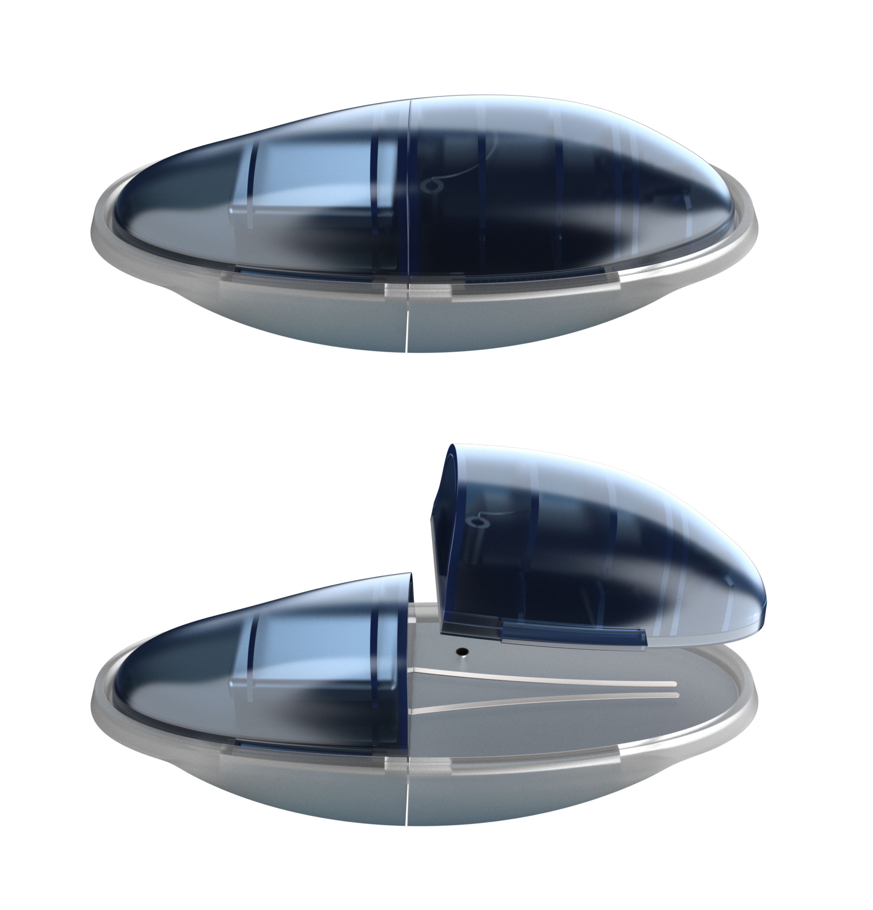

Brief
It is required to design a system / service / product that exploiting the IoT technologies developed by
STMicroelectronics can solve problems and / or improve existing solutions related to
following areas:
- Well-being of the person
- Disability
- Living comfort
What is Diabetes?
Diabetes is a chronic disease characterized by the presence of high levels blood glucose (hyperglycemia) and due to an altered quantity or function of insulin. Insulin is the hormone produced by the pancreas that allows glucose to enter cells and its consequent use as an energy source. When this mechanism is altered, glucose accumulates in the bloodstream
Diabetes Type 1
It affects about 10% of people with diabetes and generally occurs in childhood or adolescence. In type 1 diabetes, the pancreas does not produce insulin due to the destruction of the ß cells that produce this hormone: it therefore needs to be injected every day and for life.
Interviews
To better understand our user and their needs related to this discomfort, we wrote a long script of 2 hour long interview questions, which we asked to 6 people with type 1 diabetes.
Persona
Thanks to the interviews conducted to the parents as well, we've been able to build our user persona.
Customer Journey
Then we tried to understand Susannas’s struggles using a Customer Journey, understanding that the main problems are:

User flows.
In order to understand which were the most important things for a diabetes patient, we built the user flows to reach the most important actions and informations immediatly, effortless and safely. This user flows where built with the aid of the users, asking them what were they expecting from the app and the interaction from it.

This user flow maps all the possibilities that the user has once opened the application, hving everything under control he will be able to check his glicemic status at first, and also to check the condition of his product. With this method, the user has the most important informatio navailable at first sight.

This user flow instead explores the other most important feature of our product, within thw food section, the user will be able to inject the right amount of insulin, and will also get aid from the system itself.
Wireframes
Starting from the information architecture,I developed the wireframed app, without never forgetting the medical aim of the project, how should the user feel and what his he expecting to find.
UI Elements
We wanted the user to feel relaxed and carefree, but at the same time safe and in a secure environment, where he can always have things under control in ordeer to easily manage his disease.
Inspiration
We decided to get inspired from organic forms in order to design a solution that would mimic the human body.
Human Body Extension
Our studies allowed us to design and test this organic form that become an extension of the human body.
Safe, Flexible,Decomposable.
Quid offers a totally flexible system, which adapts to the user’s needs and behaviors, decomposable in different rechargable parts so the user can reuse them and not be forced to trash the whole product with the technology inside.
Safety Protocol for any situation
We studied a detailed safety protocol that only actiates if and when the product detects a worrying data of the user’s insulin status.
Quid does it all
From the food section, Quid will also take care about what you’re eating, in order to suggest you the right amount of doses to inject.

Designed for and with the users.
We involved diabetic patients in our design process for the most harsh and important choices we made, it was a very delicate project and we wanted to design things with sense and that could actually change some people’s lives.

Our project has been selected to be presented to STMicroelectronics and explain them how we used their technology and appliances, They really appreciated our project.